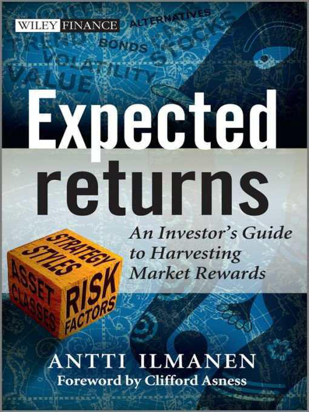

By Antti Ilmanen · Wiley Finance, 2011 · 1,010 pages · Plain English Companion
Think of this book as an attempt to answer the most important question in investing: before you put money somewhere, how much should you expect to get back? Not after the fact — before. Most investment advice focuses on which specific stocks or bonds to buy. This book takes a step back and asks something more fundamental: given what markets look like right now, what is a realistic return expectation for each major type of investment? The author, Antti Ilmanen, spent 20 years at some of the world's best investment firms assembling the evidence. This companion explains his findings in plain language.
Clifford Asness, who wrote the book's foreword and runs one of the world's largest quantitative hedge funds (AQR Capital), makes a key point upfront: investors spend almost all their time worrying about risk and almost none thinking about expected return. But expected return is what determines whether you retire comfortably or not. A portfolio that earns 4% real instead of 7% real over 30 years produces roughly half the final wealth. That gap — 3 percentage points per year — is the difference between disciplined expected return estimation and guessing based on recent history.
The book's central claim is that you can estimate future returns reasonably well if you use the right tools. The wrong tool is simply looking at what returns have been in the past. The right tools are current valuations (is this investment cheap or expensive right now?), current yield or carry (how much income does it pay if nothing changes?), and well-established patterns in how returns are generated. None of these give you a precise forecast, but they give you much better calibration than the backward-looking approach that most institutions use.
Ilmanen opens with a poem about six blind men examining an elephant. Each touches a different part — the trunk, the leg, the side — and each is convinced he knows what an elephant is. He is not wrong about his part; he is wrong about the whole. Investors make the same mistake. One investor studies only the "stock market" bucket. Another only follows Treasury bonds. A third only looks at whether recent momentum was positive. Each is touching only one part of the elephant. Ilmanen's contribution is insisting you look at all three parts simultaneously.
The three ways to look at any investment are: (1) as an asset class, (2) as a strategy style, and (3) as exposure to underlying risk factors. Think of these as three different lenses on the same camera. The asset class lens asks: "what kind of thing am I holding?" — stocks, bonds, real estate, commodities, or alternatives. The strategy style lens asks: "what pattern am I following?" — cheap assets (value), income (carry), price trends (momentum), or selling insurance (vol selling). The risk factor lens asks: "what underlying economic risks am I being paid to bear?" — economic growth, inflation, liquidity scarcity, or market crashes.
Ilmanen's three-perspective framework: looking at investments through only one lens is like the blind man examining one part of the elephant. All three are needed simultaneously.
Here is why the multi-lens approach matters practically. A standard 60/40 portfolio — 60% stocks, 40% bonds — looks diversified through the asset class lens. Through the risk factor lens, it is shockingly concentrated: over 90% of the portfolio's total risk comes from the equity portion because stocks are so much more volatile than bonds. The 40% in bonds barely matters to how your portfolio behaves because bonds move so little. If you want to genuinely divide risk equally, you need much more than 40% in bonds — or you need to broaden beyond just the stock/bond split entirely.
The four main tools for estimating expected returns are, in order of reliability: past returns (weakest), theoretical models, current market prices and yields (strongest), and expert judgment. Most institutions lead with the first and last. The book argues they should rely primarily on the third — current market prices encode the collective wisdom of millions of buyers and sellers about what risks are worth taking at current prices. A stock's earnings yield (earnings divided by price) is a much more reliable guide to future returns than what stocks returned in the 1990s.
One of the book's most important early points concerns what gets "paid." In the jargon of finance, an asset "earns a premium" when it consistently returns more than cash or short-term government bonds over long periods. But the premium must come from somewhere — it compensates for something. Usually that something is either genuine economic risk (you might lose money in a bad economy) or behavioral bias (other investors systematically overpay or underpay for this type of asset). Understanding WHICH of these two sources powers each premium helps you decide whether it will persist and how much to rely on it in a portfolio.
Imagine you are choosing a mutual fund and you rank them by their returns over the last 10 years. This is the most common approach, and it is one of the worst. Last decade's returns reflect the specific starting valuations, economic conditions, and luck of that particular decade. They tell you almost nothing about what the same fund will return in the next 10 years — and often predict the OPPOSITE, because assets that did best in the recent past are typically now expensive and priced for lower future returns.
Ilmanen shows this with a specific example from bond markets. Treasury bond return histories that begin in the 1970s and 1980s look extremely impressive because they capture most of the great bond bull market — a 40-year decline in interest rates that produced windfall capital gains for bond holders. This is like measuring a sprinter's speed by how fast he ran downhill and projecting that onto flat ground. The structural tailwind (falling rates) is gone; using that history to forecast future bond returns leads to dramatic overestimates.
The same problem applies to stock market history. US stocks returned about 5.4% per year in real terms from 1900 to 2009 — a respectable long-run record. But within that period, starting valuations mattered enormously. Investors who bought when stocks were cheap (as measured by the CAPE ratio — the price of stocks divided by their average earnings over 10 years) earned far more than investors who bought when stocks were expensive. The CAPE was 7 in 1982 (very cheap) and 44 in 2000 (very expensive). Subsequent returns were corresponding: extraordinary from the 1982 trough, terrible from the 2000 peak.
There are three types of bias that make historical averages misleading. First, sample selection bias: you tend to study the markets that survived and produced records. Countries that suffered hyperinflation, communist takeovers, or market shutdowns are underrepresented in the data. Second, time period bias: a 20-year sample tells you about THAT 20 years, not about all possible 20-year periods. Third, survivorship bias: only fund managers who survived are in the databases. Funds that failed and closed are excluded, making the average survivor look better than the realistic baseline.
So what should you use instead? Current prices and yields. When a bond yields 5%, that 5% is the most honest forecast of its future return — far more honest than what bonds returned in some past decade. When stocks' earnings yield (earnings divided by price, the inverse of P/E) is 3%, that 3% is a reasonable starting point for equity return expectations, not the 10% that stocks happened to return in the 1990s. The book spends much of its length documenting precisely how to use current market signals as expected return estimates across every major asset class and strategy.
One subtle but important point: high realized returns in the recent past are often EVIDENCE of low expected future returns, not high ones. When stock prices rise, the earnings yield falls — investors are now getting less per dollar of stock price. When bond prices rise (yields fall), future bond returns are lower. Every asset price surge that feels exciting is simultaneously a compression of future expected returns. The contrarian corollary: markets are typically cheapest — and expected returns highest — immediately following periods of extreme losses, when everyone is frightened and prices have fallen. The best time to buy is when it feels worst.
From roughly 1988 to 2007, investors experienced the most favorable 20-year environment in modern financial history. Almost everything worked. Stocks soared. Bonds also soared (as inflation fell and rates dropped for 40 years). Real estate boomed. Hedge funds and private equity posted impressive returns. Anyone who simply bought and held a diversified portfolio during this period was carried upward by powerful structural tailwinds — and might have mistaken those tailwinds for personal investment acumen.
What were the tailwinds? Ilmanen identifies five major structural forces that all worked in investors' favor simultaneously. First, global inflation fell from 13% in the early 1980s to around 3-4% by 2007. Lower inflation meant that the same future earnings stream was worth more in today's dollars, lifting asset values. Second, financial sector leverage exploded — the total debt in the financial system relative to GDP roughly quadrupled, amplifying the sensitivity of asset prices to any positive news. Third, the stock-bond correlation — which measures whether stocks and bonds tend to move in the same direction — flipped from positive to negative, making the classic 60/40 portfolio work far better than theory suggested it would.
Fourth, this entire period captured the longest bull market in US stock market history (1982-2000), which expanded price-to-earnings ratios from 7 to 44 — a 6x multiple expansion that generated capital gains on top of ordinary dividend income. Fifth, emerging market economies integrated into global trade, creating a deflationary impulse in goods prices that held inflation down and allowed central banks to keep real interest rates low. The combination of these five forces simultaneously was historically unprecedented and is unlikely to be repeated from current starting conditions.
Understanding what drove the golden era also tells you what to worry about going forward. If inflation was 13% in 1980 and fell to 3%, there is no repetition of that tailwind from a 3% starting point. If P/E ratios went from 7 to 40, they cannot repeat that expansion from a starting point of 20. The mechanical arithmetic of markets means that some of the best returns in history were "borrowed" from future returns through multiple expansion — and those borrowed returns now need to be paid back through a period of lower returns than the underlying businesses actually earn. This is not pessimism; it is math.
The 20 years before the golden era (roughly 1968-1987) were the mirror image: rising inflation, two oil price shocks, monetary policy errors, and falling real asset values. Real bond returns over 1966-1981 were deeply negative — inflation eroded more than the interest payments generated. Real stock returns were near zero for the full period despite a strong economy. Investors who extrapolated the previous decade's weak returns in 1982 missed the greatest bull market in history. This is the recurring trap: recent history is always the worst possible guide to future returns at turning points, which is precisely when good expected return estimates would be most valuable.
The practical lesson for portfolio builders is to anchor expected returns to current market conditions, not historical averages. In 2010, the building blocks for stocks suggested roughly 3-4% real return going forward — far below the 7% historical average but perfectly consistent with starting valuations and the loss of structural tailwinds. A pension fund that assumed 7-8% nominal returns (the standard institutional assumption in 2010) was setting up its beneficiaries for disappointment. An investor who accepted 3-4% real stock returns and built a portfolio around that realistic expectation made better decisions about savings rates, retirement age, and asset allocation.
Before diving into the evidence, the book establishes a precise vocabulary. The most important concept is carry. Carry is the return you earn on an investment if absolutely nothing in the market changes — no price moves, no yield changes, just the passage of time and the collection of income. For a bond, carry is the yield. For a stock, carry is the dividend yield plus the buyback yield. For a currency, carry is the interest rate you earn in that currency minus the interest rate of the currency you borrowed. Think of carry as the "standing income" of an investment — what you collect just by owning it.
The second key concept is expected return, which the book decomposes into three parts: carry + expected price change from cash flow growth + expected price change from valuation changes. For a stock, this means: dividend/buyback yield + earnings growth rate + any compression or expansion of the P/E ratio. This decomposition is useful because it forces you to be explicit about each component. If you expect stocks to return 10%, you must say: "I expect 2% from dividends, 5% from earnings growth, and 3% from multiple expansion." That third component is where most optimistic forecasts hide their unrealistic assumptions.
The Sharpe ratio measures how much return you get per unit of risk (volatility). A Sharpe ratio of 1.0 means the strategy earns one percentage point of excess return per one percentage point of volatility — quite good. A ratio of 0.5 is respectable. Below 0.3 is barely worth pursuing after costs. The Sharpe ratio lets you compare strategies that have very different risk levels on equal footing. An investment returning 8% with 20% volatility has SR = 0.4. An investment returning 3% with 5% volatility has SR = 0.6 — more efficient per unit of risk. With leverage (which you apply to scale up the low-volatility strategy), you can earn both the better risk-adjusted performance AND comparable absolute returns.
The equity risk premium (ERP) is the extra return stocks provide over safe government bills, compensating investors for the fact that stocks can lose 50%+ in a bad recession. The bond risk premium (BRP) is the extra return that longer-dated government bonds provide over short-term bills, compensating for the risk that inflation or rising rates will erode the purchasing power of those fixed payments. The credit risk premium is the extra yield corporate bonds pay over government bonds of the same maturity, compensating for the risk that the company defaults and cannot repay. These three premia are the foundation of all expected return analysis for traditional assets.
Understanding the stochastic discount factor (SDF) sounds technical but captures something intuitive. The SDF represents how much investors value an extra dollar of return in different economic states. In a recession — when you might have lost your job, your home value has fallen, and you are frightened — an extra dollar is extremely valuable. In a boom — when everything is going well and you feel wealthy — an extra dollar matters much less. Assets that pay off in recessions (like government bonds, which rise when stocks fall) are therefore valuable and command LOW expected returns because everyone wants to hold them. Assets that pay poorly in recessions (like stocks, which collapse when the economy tanks) must offer HIGH expected returns to compensate for the bad timing of their losses.
The most intuitive theory of why risky investments pay more is simple: you are compensating yourself for the possibility of losing money in a bad economic environment. Stocks fall in recessions. If you hold stocks, you are agreeing to absorb those losses right when the economy is worst and your other income might also be impaired. In exchange for agreeing to absorb those losses, other investors — those who cannot or will not bear them — pay you a premium to hold the risk they don't want. This is the rational, equilibrium explanation for the stock premium.
The Consumption-based Capital Asset Pricing Model (CCAPM) — the formal version of this logic — says that the expected return of any asset is determined by its correlation with aggregate consumption. Assets that fall in value when consumption falls (i.e., in recessions) must pay higher expected returns. Assets that hold value or rise when consumption falls must pay lower expected returns or even negative premiums (investors pay for the insurance they provide). Long-duration government bonds are the classic insurance asset in modern markets — they rise in value when stocks fall because central banks cut interest rates in recessions, which pushes bond prices up. You "pay" for this insurance by accepting lower yields.
The rational framework gets complicated when you look at specific assets closely. Value stocks (cheap stocks) tend to be struggling companies in distressed industries — they ARE more likely to go bankrupt in a severe recession. So one rational story for the value premium is: you earn more from cheap stocks because they really do have more recession exposure. High-yield bonds pay more than investment-grade bonds because they really are more likely to default in recessions. Illiquid assets pay more because they really are harder to sell exactly when you might need cash most. Each of these "rational" explanations has genuine merit even without invoking any investor irrationality.
But rational risk alone cannot explain all the observed return differences. One problem: the most volatile stocks WITHIN any asset class consistently earn lower returns than less volatile stocks, which is exactly backwards from what simple risk-compensation theories predict. If volatility meant higher recession risk, the most volatile stocks should earn the most. They don't. This requires a behavioral explanation: investors are willing to overpay for volatile, exciting stocks because they feel like lottery tickets — the chance, however small, of massive gains. This overpayment depresses future expected returns below what fair compensation would require.
The two explanations for return premia — rational risk compensation and behavioral mispricing — are not mutually exclusive. Most real return sources have elements of both. Value stocks are probably both genuinely riskier in bad economies AND persistently mispriced by investors who extrapolate recent earnings trends too aggressively. Momentum is probably both a rational compensation for the risk of sudden reversals AND a behavioral amplification of underreaction to news. The practical implication is that both types of premia can persist: rational premia persist because the underlying risk never goes away; behavioral premia persist because the underlying psychological bias never completely disappears.
Behavioral finance starts from a simple observation: real people are not the perfectly rational wealth-maximizers that classical economics assumes. They have systematic biases that are predictable, persistent, and costly. The key word is "systematic" — if the biases were random, they would cancel out in aggregate. But because many people share the same cognitive limitations, the biases pile up and push prices away from fundamental value in predictable directions.
The most powerful bias documented in the book is excessive extrapolation. When stocks have risen for three years, investors expect them to keep rising. University of Michigan consumer surveys show that retail investor expectations for stock returns correlate 0.9 with trailing 12-month market performance. In plain terms: investors expect stocks to return the most exactly when they have recently done the best — which is also, historically, when they are most expensive and will subsequently do the worst. This is not just a retail phenomenon; professional analysts consistently forecast higher long-term earnings growth rates for companies that have recently had strong earnings growth, even though that growth consistently mean-reverts within 2-3 years.
A second major bias is loss aversion combined with the disposition effect. Loss aversion means losses hurt about twice as much as equivalent gains feel good. The disposition effect is its practical consequence: investors sell their winning positions too early (to lock in the pleasurable gain) and hold their losing positions too long (to avoid the painful realization of a loss). For markets, this means that stocks that have fallen continue to face selling pressure from holders avoiding realization of loss, while winners continue to face selling pressure from holders taking profits. Both create persistent mispricings that momentum strategies can exploit: losers keep losing because sellers are reluctant to take the loss; winners keep winning because sellers take profits prematurely, keeping valuations from fully reflecting good news.
A third bias is money illusion: confusing nominal and real values. When nominal interest rates are 3% and inflation is 2%, the real interest rate is 1%. When nominal interest rates are 6% and inflation is 5%, the real interest rate is also 1%. Yet people feel richer and more able to take on debt when nominal rates are 6% because they focus on the nominal number. This drove much of the housing bubble: low nominal mortgage rates of 5-6% in the mid-2000s made home purchases feel affordable even though real home prices were at historically unprecedented levels relative to rents and incomes.
Overconfidence is another consistent bias: most investors believe they have above-average skill at picking investments, just as most drivers believe they are above-average drivers. This leads to insufficient diversification (concentrating in a few "conviction" positions), excessive trading (buying and selling on information that has already been priced in), and underestimation of tail risks (believing your analysis has identified something the market has missed when, more often, the market is right). The aggregate cost of overconfidence to investors has been estimated at roughly 70 basis points per year in excess management fees and transaction costs in the US equity market alone.
Herding — the tendency to follow the crowd — amplifies both rational and irrational price movements. When a respected investor buys a stock, others buy it without doing their own analysis, pushing the price up. This creates momentum — which then attracts more momentum investors who are not tracking fundamentals at all. Eventually the price far exceeds any reasonable fundamental value, and the subsequent correction is sharp and disorderly. The 1999-2000 tech bubble, the 2003-2007 housing bubble, and the 2021 meme stock frenzy all followed exactly this pattern: early fundamental buyers attract momentum buyers, who attract retail herders, who push prices to irrational extremes, followed by a crash when the musical chairs stop.
Every time a profitable investment pattern is discovered and documented, two questions arise. First: is this a genuine, persistent phenomenon, or did it just happen by chance in the data studied? Second: if it is real, will it persist now that everyone knows about it? These are not rhetorical questions. Many documented "anomalies" fade after publication — either because they were data artifacts to begin with, or because the act of publishing them attracted enough capital to trade away the mispricing. Both explanations are economically important and have different implications for portfolio construction.
Testing whether a strategy is real rather than lucky requires statistical rigor that most investors never apply. The basic question is: could this result have occurred by chance? If you test 100 different trading rules on 30 years of data, 5 of them will appear to have statistically significant results purely by chance — that is what "statistically significant at the 5% level" means. If you report only those 5 and bury the other 95, you have committed data mining. The academic literature is full of this problem, and many published "anomalies" are likely artifacts of testing many rules and reporting only the successes.
Andrew McLean and Jeffrey Pontiff studied 82 published equity market anomalies and found that after publication, their average return declined by 58%. About one-third of this decline was genuine disappearance (the mispricing was real and got traded away). About two-thirds was statistical over-estimation — the anomaly was never as large as the historical backtest suggested because the backtest had some degree of data mining embedded in it. This is the most honest assessment available of how much published financial research translates into real trading profits.
The strategies that survive this scrutiny most robustly — value, momentum, carry, and volatility selling — have three characteristics in common. They work across multiple asset classes (not just US stocks). They work across multiple countries and time periods (not just the US in the 1980s). And they have plausible explanations from both rational risk and behavioral bias that predict why they should persist rather than disappear. When a strategy meets all three tests, the confidence that it will continue generating returns is substantially higher than for strategies that meet only one.
The risks that remain even for genuine strategies are crowding and capacity. When too many investors use the same strategy, their simultaneous positioning creates fragility. Any adverse event triggers simultaneous exits that cause catastrophic short-term losses — even for strategies that were legitimately profitable before crowding. The August 2007 "quant crisis" is the paradigm: dozens of quantitative equity funds held nearly identical factor exposures, and when one large fund was forced to liquidate, it dragged all the others down simultaneously in two days of extreme correlated losses. The strategy was real; the execution risk from crowding was also real.
Global stocks returned about 5.4% per year in real terms (above inflation) from 1900 to 2009 — roughly 3.7% above long-term government bonds and 4.4% above T-bills. This is the equity risk premium: the extra return for bearing the anxiety and occasional catastrophe of owning stocks rather than safe government bonds. These are real numbers from 16 countries over a century — the most comprehensive long-run evidence available. But understanding what drove these returns is more important than memorizing the average.
Stock returns have three components: the dividend yield (cash income paid to shareholders each year), dividend growth (the increasing size of those dividends over time as companies grow), and multiple expansion or contraction (whether investors are willing to pay more or less for each dollar of dividends/ earnings than they were before). The third component is the most dangerous to forecast — and yet it is the component most embedded in extrapolative forecasts. The extraordinary stock returns of the 1980s-1990s included several percentage points per year of P/E multiple expansion that is arithmetically impossible to repeat from current starting valuations.
A critical finding from Robert Arnott and Peter Bernstein: real earnings per share (EPS) growth has averaged only about 1% per year historically — far below what most investors assume. The reason is dilution. When companies issue new shares (through stock options, secondary offerings, IPOs of new companies), they are sharing the aggregate profit pool with a larger number of shareholders. The aggregate corporate profit pool grew at 3% real, but because of 2% annual net equity issuance, individual shareholders only received 1% real EPS growth per share. This 2% dilution drag is real, persistent, and completely ignored in most equity return projections.
The Cyclically Adjusted P/E ratio (CAPE, or Shiller P/E) is the single best long-run valuation indicator for equities. It divides the current stock price by the average of the last 10 years of earnings (adjusting for inflation), smoothing out the cyclical swings that make a single year's earnings unreliable. CAPE has a strong track record: buying when CAPE is low (below 12-15) has consistently produced excellent subsequent 10-year returns; buying when CAPE is high (above 25-30) has consistently produced poor subsequent 10-year returns. The correlation between CAPE and subsequent 10-year returns is around 0.7 — impressively high for any market indicator.
The book makes a crucial distinction about the equity premium's source. Most of the premium — roughly two-thirds — came from the dividend yield itself and dividend growth. Only about one-third came from capital gains above and beyond dividend reinvestment. This means that investors who reinvested their dividends and held for long periods captured most of the equity premium mechanically, without needing to time the market. But it also means that in low-dividend-yield environments (like the 2000s-2010s, when yields fell to 1.5-2%), the mechanical return from dividends alone is far lower than in high-yield eras, and more of the return must come from growth or multiple expansion to hit historical average levels.
Forward-looking equity return estimates use the dividend yield as the starting point, add realistic EPS growth (inflation plus roughly 1% real, minus dilution), and subtract any expected multiple contraction. At S&P 500 earnings yields of around 3.5-4% in 2010 and realistic growth expectations of 4% nominal, the total expected return is 7.5-8% nominal, or approximately 3-4% real. This is substantially below the 10% nominal that most pension plans assumed as their long-run equity return. The gap between actuarial assumptions and realistic expectations represents one of the largest hidden risks in the global financial system — deferred accounting losses that will eventually require either lower benefits or higher contributions to fill.
When you lend money to the US government for 1 month, you get paid a certain interest rate (the T-bill rate). When you lend for 10 years, you typically get paid more. Why? Because locking your money up for 10 years carries risks that a 1-month loan does not. Inflation might erode your purchasing power. Interest rates might rise, making your 10-year loan less valuable compared to new bonds issued at the higher rate. You might need the money sooner than 10 years and have to sell at a loss. The extra yield you earn for bearing these risks over the T-bill rate is the bond risk premium (BRP).
The BRP has varied enormously over time. At its peak in the early 1980s, investors demanded about 3-4% extra per year to hold 10-year Treasuries versus T-bills — reflecting the terrifying memory of 15% inflation and the real possibility of it recurring. By the mid-2000s, with inflation under 3% for two decades and the Federal Reserve having established its credibility as an inflation fighter, the BRP had fallen to near zero. At that point, the 10-year Treasury yield was almost entirely explained by expected future short-term rates, with virtually no additional compensation for the risks of holding long-duration bonds.
A 10-year government bond yield contains three layers: the baseline cash rate, compensation for expected inflation, and the actual bond risk premium (BRP). When BRP falls to near zero, holding long bonds offers no reward beyond the expected rate path.
The shape of the yield curve — the chart of yields across different maturities — encodes the BRP indirectly but not cleanly. A steep upward-sloping curve (long yields much higher than short yields) usually means either that rates are expected to rise, or that investors require a large BRP, or both. The challenge is separating these two explanations. If the steep curve just reflects an expectation that short rates will rise, long bonds will underperform: rates rise, prices fall, and the investor is left with returns no better than rolling T-bills. If the steep curve reflects genuine BRP, long bonds will outperform as the excess yield is earned without offsetting yield increases.
The best indicator for isolating the true BRP is the "survey-based BRP" (SBRP): take the current 10-year Treasury yield and subtract the consensus professional forecast of where short-term interest rates will be on average over the next 10 years. What remains after stripping out rate expectations is the pure risk premium. From 1983 to 2009, this indicator had a 5-year predictive correlation of 0.67 with subsequent bond returns — far more powerful than simply looking at the yield curve slope (0.06 correlation). When the SBRP is high (bonds pay a lot above expected rates), future bond returns will likely be strong. When SBRP is near zero (the entire yield is explained by expected rate normalization), future bond returns will be close to T-bill returns.
The maturity structure of bond risk premiums follows a hockey-stick shape that most investors don't fully appreciate. The premium rises steeply from 1-year to 5-year maturities — you get paid substantially for each year of additional duration in that range. But beyond 5-10 years, the additional premium per year of added duration flattens or even declines. The front end of the yield curve (1-3 year bonds) has historically produced Sharpe ratios above 1.0 — better than equities, better than longer bonds, and far better than the expected return theories would predict. This makes the front end the most consistently efficient part of the bond market for risk-adjusted returns.
When you buy a corporate bond instead of a government bond of the same maturity, you earn a higher yield — the "credit spread" or "yield spread." This extra yield compensates you for three risks: the company might default (stop paying you back), the bond might get downgraded (becoming less valuable as its perceived risk increases), and the bond might be harder to sell quickly in a crisis (liquidity risk). All three of these risks are real. The question Ilmanen examines is: how much of the credit spread do investors actually capture as realized return, and which corporate bonds are worth owning?
The answer to "how much do you actually capture?" is surprisingly small: only about 21 cents out of every dollar of average yield spread above Treasuries. The average investment-grade corporate bond spread from 1985 to 2009 was about 129 basis points per year (1.29%). But after accounting for expected defaults, downgrading drag (bonds are twice as likely to be downgraded as upgraded), and liquidity costs, investors kept only about 24-30 basis points per year in actual excess return. The other 99+ basis points were consumed by realized credit losses and transaction costs. This does not mean corporate bonds are bad investments — just that the stated yield overstates the expected return by a large factor.
Not all corporate bonds are equally disappointing. The front end of the credit curve — short-dated, high-quality investment-grade bonds — is the most consistently efficient credit trade. Short-dated AAA and AA-rated bonds (1-3 year maturity) have historically produced Sharpe ratios above 1.0 because defaults for these issuers are genuinely rare, downgrading is slow enough to be monitored, and the short maturity means duration risk (interest rate sensitivity) is minimal. You collect the credit spread without bearing the full range of risks that make long-dated or low-rated corporate bonds disappointing.
The worst credit investment, both in terms of realized returns and in terms of risk-adjusted performance, is the very bottom of the credit spectrum: CCC-rated and below. These bonds are sometimes called "distressed" or "junk." They offer spectacular stated yields — sometimes 15-20% above Treasuries — because default rates are very high. But the realized return after defaults is typically the worst of any bond category. Investors are systematically fooled by the high stated yield into thinking they are getting compensated for risk, when in fact default losses consume the entire yield premium and then some in bad periods. The within-asset-class rule holds perfectly: the highest-yielding (highest-volatility) corporate bonds earn the worst long-run returns.
The best credit opportunity described in the book is the "fallen angel" trade. When an investment-grade bond (rated BBB or above) gets downgraded to high-yield (BB or below), there is a wave of forced selling: investment- grade-only funds must sell the bond because their mandate prohibits holding high-yield. This institutional selling pressure pushes the price well below fundamental fair value, creating an opportunity for investors without such constraints. Buying bonds immediately after they fall to BB from BBB has produced genuine excess returns in virtually every study — not because the bonds are safe, but because the forced selling creates a temporary distortion that patient capital can exploit.
These four "alternatives" all boomed from 2002 to 2007 and all crashed in 2008. That simultaneous crash is not a coincidence — it reveals a common underlying structure. All four earn some of their returns from illiquidity and complexity premia; all four suffered from the same collapse in risk appetite and funding availability that hit in 2008. And all four have serious reporting biases that inflate their historical returns substantially before bias adjustment. The lesson is not that alternatives are bad — it is that you must do the bias adjustment before comparing to stocks or bonds.
Real estate's key fact: the Shiller long-run series shows essentially zero real price appreciation for US residential real estate from 1890 to 2010 — houses did not get more valuable in real terms over 120 years. All the real return from home ownership came from the equivalent of rent (the imputed rent you don't pay by owning your home). Commercial real estate is different and more attractive: with actual rental income generating 5%+ annually and some real appreciation, the total real return is closer to 6-7% for commercial properties. The housing bubble of the mid-2000s was unusual because price-to-rent ratios and price-to-income ratios reached historically unprecedented levels simultaneously — obvious in hindsight, but hidden to investors using nominal price data and overlooking the rental yield.
Commodities have a return structure that most investors misunderstand. The return on a commodity futures investment has three components: (1) the T-bill yield on your cash margin (basically free, not an active return), (2) the "roll return" (whether the futures curve is in backwardation or contango), and (3) spot price changes (unpredictable short-term volatility). The roll return is the genuine risk premium component and the one you can assess in advance. Backwardation (where near-term futures prices are above long-term futures prices) means you earn money mechanically as you roll from expiring contracts into cheaper long-dated ones. Contango is the opposite and costs you money on each roll. Energy commodities have historically shown the most consistent backwardation and have produced the best commodity returns.
Hedge funds reported 12.3% compound return from 1990 to 2009. After the two main bias corrections — removing funds that didn't survive (survivorship bias) and removing performance reported retroactively by funds that later joined databases (backfill bias) — the actual compound return falls to about 7.6%. After further subtracting the returns attributable to ordinary stock and bond market exposure (beta), only about 3% per year of genuine alpha remains. And that 3% goes entirely to management fees (2% management fee plus 20% of profits = roughly 3.8% on average historical returns). End-investors received zero to slightly negative net-of-fee alpha in aggregate. Individual top- quartile managers are genuinely skilled; the average manager is not.
Private equity's story is similar but more extreme. The industry claimed to beat public stocks by 3-5% per year. The most rigorous academic study (Phalippou and Gottschalg) found the opposite: after removing selection bias (only successful funds eventually report track records), adjusting for fees, and accounting for the leverage embedded in buyout deals (60-70% debt), private equity lagged the S&P 500 by roughly 6% per year on a risk-adjusted basis. The perception of outperformance persists because fund returns are reported using IRR calculations that can be manipulated by timing capital calls, and because the funds that failed are simply never heard from again. The only reliable exception: endowments with access to top-quartile funds (which is itself a skill that very few institutions possess) do earn genuine net-of-fee excess returns.
Value investing — buying cheap stocks and avoiding expensive ones — is one of the most thoroughly documented phenomena in financial history. Benjamin Graham and David Dodd described it in 1934. Eugene Fama and Kenneth French quantified it systematically in 1992. The basic finding: stocks trading at low prices relative to their book value, earnings, or dividends consistently outperform stocks trading at high prices relative to these fundamentals, by roughly 3-4% per year on a long- short basis. This "value premium" has held in US data back to 1926, in international data back to the 1970s, and in alternative asset classes like currencies, bonds, and commodities.
The intuitive explanation for why this works: investors systematically overpay for exciting growth stories and systematically underpay for boring, struggling, or recently disappointing companies. When a company has grown earnings by 20% per year for five years, investors extrapolate that into the future and bid the stock up to a very high P/E ratio. But growth is mean-reverting — companies with 20% growth inevitably slow down as markets mature and competitors respond. The expensive valuation priced in continued 20% growth is disappointed when growth slows to 8%, even though 8% is perfectly good growth. Conversely, the beaten-down company in a struggling industry often trades at such a low price that even mediocre performance generates good returns.
The behavioral explanation is more convincing than the rational one. Research by Lakonishok, Shleifer, and Vishny showed that value stocks CONSISTENTLY surprise positively on earnings announcement days — analysts and investors systematically underestimate their earnings. Expensive growth stocks consistently surprise negatively. This pattern of consistent positive surprises for value and negative surprises for growth is the fingerprint of systematic mispricing: markets are wrong in a predictable direction. If value underperformance were pure rational risk compensation (they really are riskier in bad times), you wouldn't expect the systematic earnings surprise pattern.
Style timing — adjusting your value exposure based on how cheap value stocks are relative to growth stocks — adds meaningful value. When the earnings yield difference between the cheapest 25% and most expensive 25% of stocks is wide (value stocks are very cheap relative to growth), subsequent value premium returns are high. When the earnings yield spread is narrow (value stocks are not particularly cheaper than growth), the value premium is small or absent. The 5-year predictive correlation of this earnings yield spread with subsequent value returns is 0.48 — quite powerful for a predictive indicator. In plain terms: go heavier on value when value is cheap relative to growth, and lighter when the spread has compressed.
Value works in every asset class that has been studied, not just equities. Currencies with real exchange rates far below their purchasing-power-parity fair value (very cheap currencies) subsequently outperform currencies that are very overvalued. Government bonds with high real yields (nominal yield minus expected inflation) outperform those with low real yields. Commodity futures with prices far below their historical average (in real terms, relative to production costs) outperform those trading well above historical averages. This universality suggests the value premium has a deep root in investor psychology — the tendency to extrapolate and overpay for recent winners — rather than being a quirk of any single market.
The currency carry trade is one of the most consistently profitable strategies in financial markets — and one of the most counterintuitive. Here is the setup: you borrow money in a low-interest-rate currency (say, the Japanese yen at 0.5%), convert it to a high-interest-rate currency (say, the New Zealand dollar at 7%), invest it at that high rate, and collect the 6.5% interest rate differential as profit. Standard economics (the Uncovered Interest Parity theory) predicts this won't work: the high-yield currency should depreciate by exactly the interest differential, eliminating your gain. From 1983 to 2009, this prediction was consistently and dramatically wrong.
The New Zealand dollar earned 4 percentage points more annual interest than the US dollar over this period — and instead of depreciating by 4%, it mildly appreciated. So carry investors collected both the interest differential AND a small capital gain. The G10 carry trade (buy the three highest-yielding currencies, sell the three lowest-yielding ones) earned 6.1% annual excess return with 10.5% volatility and a Sharpe ratio of 0.61 from 1983 to 2009. This Sharpe ratio was remarkably consistent: 0.58 in the 1980s, 0.63 in the 1990s, 0.58 in the 2000s — essentially the same across three very different decades. For emerging market currencies with even higher interest rate differentials, the Sharpe ratio was 1.30 — extraordinary by any benchmark.
Why does it work? Three explanations compete. The first is rational risk compensation: carry trades tend to lose money specifically in financial crises — October 1987 (-11%), October 1998 (-9%), October 2008 (-11%) — when the investor's other investments are also falling. The carry trade is essentially selling insurance against financial crisis in currency form: you collect the premium every month in good times and pay out catastrophically in the worst crises. If that describes genuine economic risk, the premium is rational compensation. The second explanation is the "Peso problem": there is always some small probability of a massive devaluation that the historical sample hasn't captured — Argentina 2002 is a real-world example that showed what can happen to EM carry.
The third explanation is behavioral: survey data shows that professional FX forecasters consistently expect high-yield currencies to depreciate by more than they actually do. Even professional investors, who know about UIP and its empirical failures, anchor on the theoretical prediction of depreciation that doesn't materialize. This systematic forecast error maintains the carry trade opportunity even when rational risk compensation cannot fully explain it. The practical upshot: all three explanations suggest the carry trade premium is persistent, even if we cannot be sure which mechanism dominates in any given period.
One crucial fact about carry trade risk management: the worst months are clustered in the exact same calendar months (October) across multiple decades. This is not coincidence — it reflects the seasonal structure of institutional risk appetite, which tends to collapse in autumn when funding markets tighten, year-end approaches, and global financial stress tends to peak. The carry trade can also be protected with simple timing rules: when implied currency volatility spikes to historical highs, cut carry exposure because you are paying too much for the insurance you are implicitly selling. When global equity markets have just fallen sharply, the carry trade's own implied vol is elevated and future expected returns from maintaining carry exposure are temporarily poor.
Momentum is the observation that investments that have recently performed well tend to continue performing well in the near future, and recent losers tend to continue losing. This is counterintuitive to anyone who believes markets are efficient and prices fully reflect all available information. If markets were perfectly efficient, past price changes would contain no information about future returns. But they do — in the 3-12 month window, the relationship is consistent, strong, and persistent across virtually every asset class and time period studied.
The practical implementation of momentum is straightforward. Take any universe of assets — stocks, currencies, commodities, bond futures. Rank them by their total return over the past 6-12 months (skipping the most recent month to avoid short-term reversal contamination). Buy the top performers. Sell or avoid the bottom performers. Hold for 1-3 months and repeat. In commodity futures, this approach earned roughly 7-10% annual excess return with a Sharpe ratio around 0.55-0.85. Across a diversified portfolio of 15 assets spanning four asset classes, momentum's portfolio Sharpe ratio reached 1.4 — one of the highest systematically documented Sharpe ratios of any investment strategy.
Trend following's most remarkable property is its behavior in financial crises. In the 10 worst months for S&P 500 returns since 1990, trend following was profitable in 9 of the 10. The mechanism is elegant: if equity markets have been falling for months, a systematic trend follower has already gone short equities before the worst of the decline, collecting profits while most other strategies are suffering losses. The 2008 crisis confirmed this: trend following went massively short equities and long government bonds from the third quarter of 2008, earning some of its best historical returns in the year when nearly every other strategy was catastrophically losing.
Trend following and carry have similar long-run Sharpe ratios, but behave opposite in crises. Trend following makes money when markets crash; carry loses money at the same time. Combining them dramatically improves the portfolio.
Why does momentum work? The behavioral explanation is the most convincing. Investors initially underreact to news — they don't immediately adjust prices fully when new information arrives, partly because of cognitive conservatism (anchoring to old views), partly because of institutional constraints (it takes time for news to reach all investors and for them to respond). This creates a temporary price under-reaction that gradually corrects as more investors update their views — generating the momentum pattern. Eventually prices overshoot fair value as herding reinforces the trend, setting up the long-term reversal. The pattern is: short-term reversal (≤1 month), intermediate momentum (3-12 months), long-term reversal (2-5 years).
The main risk in momentum is the "momentum crash" at sharp market turning points. When markets reverse after a sustained trend, the positions accumulated by momentum strategies are on the wrong side of the reversal. Spring 2009 was momentum's worst modern episode: the sharp recovery from March 2009 lows drove up exactly the stocks that momentum had been selling short (beaten-up financials and cyclicals), while the stocks momentum held long (defensives that had "worked" in 2008) underperformed. Managing this risk requires combining momentum signals with valuation filters (refusing to maintain momentum positions in extreme overvaluation) and with volatility targeting (reducing position size when markets become highly volatile, which often precedes the turning-point reversals).
When you buy car insurance, you pay a premium every month. Most months, nothing happens — the insurer keeps your money and earns a steady profit. Occasionally, there is an accident — the insurer pays out far more than the monthly premium collected. Over time, the insurer earns a profit because premiums are set above the actuarially fair cost of accidents. Options markets work similarly: the "implied volatility" in S&P 500 options — the market's pricing of future volatility — has historically run about 4 percentage points above actual subsequent realized volatility (20% implied vs. 16% realized, on average). This gap is the premium that option sellers collect for providing insurance to option buyers.
Three main strategies harvest this premium. The covered call (or BXM index) involves owning the stock market while simultaneously selling call options on it — agreeing to give up gains above a certain price in exchange for the option premium. The variance swap involves directly trading the difference between implied and realized volatility. The ATM straddle sale involves selling both a call and a put at the current market price, profiting if the market stays near its current level. All three have produced impressive Sharpe ratios in historical tests — the straddle approach showed SR = 1.2 in one study — but all three also suffered catastrophic losses during the 2008 crisis, when the market moved far more than implied volatility had suggested.
The premium exists for real reasons. When you sell an S&P 500 put option, you are agreeing to buy the stock market at a fixed price even if it crashes — in exactly the period when every investor is most panicked and most reluctant to hold stocks. This is genuinely painful, and the market charges a genuine premium for it. The specific fear that drives option buyers to overpay is what traders call "crash-o-phobia" — the persistent overpricing of out-of-the-money downside protection after the 1987 crash, which permanently changed how investors perceive left-tail risks. Option sellers are literally being paid to be the buyer of last resort in a market crash.
The equity index vol premium has an extra component that makes it uniquely attractive: the correlation risk premium. When you sell an index put option, you are implicitly short the risk that all stocks will crash together — the correlation risk. The index's implied volatility is higher than the volatility of any individual stock because it incorporates the possibility that all stocks move in lockstep. This "excess" implied volatility relative to individual stock volatility is the correlation premium. On average, implied correlation is about 50% while realized correlation is about 30% — a persistent 20 percentage point gap that vol sellers collect over time. In October 2008, realized correlation spiked to 75%+ as this risk materialized, wiping out years of vol-selling profits in weeks.
The critical lesson about timing: vol is cheapest (most attractive to sell) during long periods of market calm, when option sellers have been profitable for years and buyers have gotten tired of paying for protection they never used. But these calm periods are precisely when the next crash is building — the calm before the storm. The most dangerous time to sell vol is immediately after a major crash, when premiums are enormous and selling feels irrationally attractive despite the fact that the event has already occurred. The rational strategy: increase vol-selling exposure steadily during calm periods (when premiums are modest but consistent), reduce it after sharp losses (not after crashes, when premiums are highest and feel most attractive).
Not all investments respond the same way to economic growth. Stocks rise when the economy grows because corporate earnings expand with GDP. Credit spreads tighten (corporate bonds do well) when the economy is strong because companies are less likely to default. Emerging market equities are even more sensitive to global growth than developed market stocks. By contrast, long-term government bonds typically FALL when economic growth is strong — because strong growth means central banks will keep rates high or raise them, reducing bond prices. Understanding each asset's "growth beta" is the foundation of building a genuinely diversified portfolio.
The single most important and counterintuitive finding in the chapter: countries that grow their economies fastest do NOT produce the highest stock market returns. Economists Dimson, Marsh, and Staunton studied 16 countries from 1900 to 2009 and found essentially zero — or even slightly negative — correlation between a country's GDP growth rate and its equity market returns. China grew its economy roughly tenfold from 1993 to 2009, yet foreign USD investors in Chinese stocks earned slightly negative total returns. Latin America grew its economy modestly but produced excellent equity returns because starting valuations were extremely cheap. The reason is price: when everyone knows that China will grow fast, they pay up for Chinese stocks in advance, and future returns are compressed by that high starting price.
The same logic applies at the company level and is why growth investing — buying companies with the fastest recent earnings growth — tends to underperform. Fast-growing companies are priced for continuing fast growth. When growth inevitably slows (it always does, as markets mature and competitors respond), the stock falls even if the company is still growing at a respectable 8% rate — because the market priced in 20% growth and got 8%. The earnings dilution problem compounds this: high-growth companies typically issue a lot of new stock (to fund their growth and to compensate employees with stock options), which dilutes per-share returns even as the company itself grows rapidly. Emerging market economies dilute shareholders at roughly 10% per year versus 2% for mature US companies — a permanent headwind to EM equity returns despite EM economic strength.
The inverted yield curve deserves its reputation as the most reliable recession predictor available. In every US recession since 1960, the yield curve (specifically the difference between 10-year and 3-month Treasury yields) inverted — became negative — before the recession began. This track record has essentially zero false positives over 60 years. Why? Because an inverted yield curve means short-term rates are higher than long- term rates, which only happens when the Fed has raised short rates enough to slow the economy — the very action that typically causes recessions. Bond market participants are pricing in the probability that the Fed will eventually cut rates when the recession arrives, which is why long yields fall below short yields before the recession even starts.
Inflation is perhaps the most complex macro variable in portfolio management because its effect on different investments has varied dramatically across history — and even reversed sign. Nominal government bonds are the clearest case: inflation is unambiguously bad for them because it erodes the purchasing power of the fixed coupon payments. A 4% Treasury bond during a period of 3% inflation is fine; during a period of 6% inflation, that same bond is losing real purchasing power each year. This is why the worst period for Treasury bond investors in modern history was 1966-1981 — 15 years of inflation above bond yields.
One of the most important structural changes in modern markets was the flip in the stock-bond correlation. From 1965 to 1997, stocks and bonds moved in the same direction: both fell in high-inflation environments (bad for bonds directly, bad for stocks because tightening killed earnings multiples) and both rose when inflation fell. This positive correlation made the 60/40 portfolio less diversified than it appeared — when you needed diversification most, it wasn't there. After 1998, the correlation turned negative: bonds began rising when stocks fell because in a world of credible, low inflation, the main risk to stocks shifted from inflation to economic downturns — and bonds rise in economic downturns because central banks cut rates. This negative correlation is what made the 60/40 portfolio work beautifully from 1998 to 2020.
Different assets have different responses to inflation. Think of it as an "inflation beta" — how much the asset rises (or falls) for each percentage point of unexpected inflation. Commodities (especially oil and energy) have the highest positive inflation beta — they are a direct cause of CPI inflation. TIPS (Treasury Inflation- Protected Securities) are designed to have zero inflation beta — their principal grows with inflation, so their real value is maintained by design. Nominal government bonds have the most negative inflation beta — they are the worst inflation hedge. Short-term equities have negative inflation beta (central banks tighten in response to inflation, killing stock multiples), but long-run equities have positive beta (eventually earnings rise with nominal prices). Real estate is somewhere in between — rents adjust slowly to inflation, providing a hedge over 5-10 year horizons but not month-to-month.
Gold is the most misunderstood inflation hedge. Its returns are better explained by inflation UNCERTAINTY than by inflation LEVEL. Gold soared in the late 1970s when inflation was high AND unpredictable AND the US dollar's reserve currency status was in question. In the 2000s, gold rallied strongly during a period of mild disinflation — because investors were worried about monetary system risk and dollar debasement, not current inflation. Unlike other commodities, gold can perform well even during mild deflation when it serves as monetary insurance. The practical implication: gold is best thought of as insurance against monetary regime breakdown, not as an inflation tracker.
TIPS (inflation-linked bonds) are the theoretically cleanest inflation hedge, but they have their own complications. When TIPS were introduced in the US in 1997, they offered high real yields (up to 4.3%) because investors were unfamiliar with them and required a novelty premium. As TIPS adoption grew, real yields compressed to near zero. In fall 2008, TIPS became temporarily very cheap — not because investors feared deflation, but because panicked institutions were selling everything complex and unfamiliar to raise cash. Buyers who stepped in during that dislocation earned strong returns as TIPS recovered quickly. The general lesson: TIPS real yields are an imperfect signal because they mix genuine inflation expectations with liquidity premiums and institutional supply/demand effects.
Liquidity means how quickly and cheaply you can convert an investment into cash at a fair price. A large-cap stock is highly liquid — you can sell $1 million worth in seconds at a price within pennies of the last trade. A private equity fund investment is highly illiquid — you cannot sell it at all for 7-10 years without their permission, and even then only to a limited secondary market at a discount. Between these extremes lies a spectrum: government bonds, corporate bonds, real estate, hedge fund interests, and private debt. Investors who accept illiquidity are compensated with higher expected returns — the illiquidity premium.
The most important lesson about liquidity is that it disappears exactly when you most need it. During the 2007-2008 financial crisis, instruments that had been trading with tight bid-ask spreads — even investment-grade corporate bonds — suddenly became nearly impossible to sell at any reasonable price. The Bank of England tracked an aggregate liquidity index from 1992 to 2009. Early 2007 showed the most exceptional market liquidity in the entire history. Late 2008 showed the most extreme illiquidity ever recorded — an 8 standard-deviation swing in less than two years. This is the liquidity spiral: falling asset prices trigger margin calls, which force selling, which drops prices further, which triggers more margin calls, in a self-reinforcing downward spiral.
The practical investment rule derived from this evidence is counterintuitive: do NOT always harvest illiquidity premia. Harvest them opportunistically — when they are wide — and reduce exposure when they are narrow. In 2001, private equity, infrastructure, and hedge funds offered genuine illiquidity premia. By 2006-2007, so much institutional capital had flowed into these strategies that the premia had compressed toward zero while the capital commitments were locked up for years. The Yale endowment model worked brilliantly from 1990 to 2000 precisely because David Swensen was early to illiquid alternatives when premia were wide. It worked less well for institutions that copied the model in 2005-2007, when they were late to the party and committing at nearly zero premium.
The Federal Reserve's monetary policy directly affects the illiquidity premium. During periods of Federal Reserve easing (cutting interest rates, expanding money supply), illiquid stocks outperform liquid stocks by about 2.3% per month — because cheap, available credit makes it easier to finance positions in less liquid assets. During periods of Fed tightening, the gap narrows to 0.3%. The practical portfolio implication: at the beginning of rate-cutting cycles, increase exposure to illiquid assets and small-cap stocks; at the peak of rate-cutting cycles (when liquidity is abundant and premia have compressed again), begin reducing exposure and rebuilding your liquidity cushion for the next dislocation opportunity.
Here is one of the most important — and most counterintuitive — findings in the entire book: within any given asset class, the MOST volatile investments consistently earn the LOWEST long-run returns. The highest-volatility stocks underperform the lowest-volatility stocks by about 1% per month after controlling for other factors. CCC-rated bonds (the most volatile bonds) earn the worst long-run returns of any bond rating category, despite their enormous stated yields. The 30-year Treasury underperforms the 10-year Treasury on a risk-adjusted basis within the government bond universe. This "within- class" rule holds reliably across markets and time periods. Yet across asset classes (comparing stocks to bonds to cash), volatility IS rewarded — riskier asset classes earn more. How can both be true?
The volatility paradox: within any asset class, higher volatility predicts LOWER returns (left panel). Across asset classes, higher volatility predicts HIGHER returns (right panel). Both are true simultaneously because of the leverage constraint explanation.
The explanation that resolves this paradox is the leverage constraint. Most investors — especially retail investors and many institutions — cannot or will not use borrowed money to leverage their portfolios. If you want higher returns but can't use leverage, your only option is to buy higher-risk (higher-volatility) assets. This creates excess demand for the most volatile assets within any class, bidding up their prices and reducing their future returns. Meanwhile, the boring, low-volatility assets within each class are ignored, making them cheap and generating better future returns. Across asset classes, the same principle does not apply in the same way: stocks as a whole are genuinely riskier than bonds as a whole, and the macro-level risk compensation IS real.
This logic leads to an actionable strategy called Betting Against Beta (BAB), developed by Frazzini and Pedersen. Buy the low-volatility, low-beta assets within each class and leverage them to a normal portfolio volatility level. Sell (or underweight) the high-volatility, high-beta assets within each class. This sounds complicated, but the simple version is: own fewer lottery stocks (exciting, volatile, speculative) and more boring, stable businesses at similar valuations. The BAB strategy has been profitable in US equities, international equities, government bonds, credit markets, and currencies — everywhere the leverage constraint prevents investors from simply leveraging the safe stuff and instead drives them to overpay for exciting, volatile alternatives.
The options market has its own version of this phenomenon. Out-of-the-money put options on the S&P 500 — the insurance against catastrophic market drops — are systematically overpriced relative to fair value. Investors are irrationally frightened of the left tail since 1987, and they overpay for protection they rarely need. At the same time, out-of-the-money call options on individual stocks — the "lottery ticket" options — are also overpriced because retail investors love the tiny probability of a massive gain. Selling these overpriced options (collecting premium by being the insurance provider) has historically earned attractive returns, subject to catastrophic losses in tail events. The premium is real; the tail risk is also real.
Investment returns are not fixed — they are shaped by the behavior of the investors who pursue them. When a strategy earns great returns, money floods in. As more capital chases the same opportunities, competition drives the returns down. Eventually the strategy is overcrowded and even a small adverse event triggers a simultaneous rush for the exit by all those similar positions, causing catastrophic short-term losses that are far worse than the underlying risk should generate. This cycle of discovery → crowding → crash → recovery is the defining lifecycle of virtually every systematic investment strategy.
The August 2007 "quant crisis" is the clearest illustration. Dozens of quantitative hedge funds had independently developed similar equity factor portfolios — long value, short expensive, long quality, short junk. Because the strategies were independently derived from similar academic research using similar data, the portfolios were nearly identical despite the funds never talking to each other. When one large fund was forced to liquidate a major position to meet client redemptions, the price impact hit all the other funds' similar positions. Suddenly, strategies that had shown correlation near zero for years were moving in perfect lockstep, losing large sums simultaneously. "We have found a new risk factor — it is us" became the wry description of crowded-strategy risk.
Alpha — genuine excess return from insight — inevitably becomes beta — systematic, easily accessible exposure — over time. FX carry was exotic alpha when only a handful of currency hedge funds ran it in the 1980s. By the 2000s, it was available in indexed products at 15 basis points per year. The process is healthy for markets (more efficient pricing) but painful for early adopters who paid high fees for what has since become cheap exposure. Strategies that take 30+ years between catastrophic failures — carry's worst episodes were 1993, 1998, and 2008 — will appear as genuine alpha in any 8-10 year window, because investors have never experienced the once-per- 20-year tail event. The risk is real; the sample is simply too short to reveal it through normal measurement.
The practical portfolio construction implication is a strong preference for transparency about crowding. Indicators that suggest a strategy has become crowded include: dramatic AUM growth in the relevant fund universe, compression of the raw risk premium (the strategy is cheaper and less attractive than historically), and elevated position concentration (bid-ask spreads on the relevant assets have narrowed unusually). When all three signals appear simultaneously, reduce exposure — not because the strategy is "broken," but because the expected return has been competed away by the crowding itself, leaving only the tail risk without commensurate compensation.
Expected return for any investment can be broken into three building blocks: (1) Carry — the income in an unchanged world. (2) Expected price change from cash flow growth — how fast earnings, dividends, rents, or coupons grow. (3) Expected price change from valuation — whether the price/earnings ratio or yield will drift toward or away from fair value. These three components can be estimated independently and added together, making the assumptions explicit rather than hiding them in an opaque "expected return" number.
For stocks in 2010, the building blocks looked like this. Dividend yield was about 2%. Buyback yield (corporations returning cash by buying their own stock) added another 1-1.5%. Real earnings growth historically ran at 1% after dilution. Nominal earnings growth (real growth plus inflation of roughly 2%) was therefore about 3%. Valuation (CAPE near its long-run average of 16-17x) suggested roughly zero mean reversion. Total expected nominal return: 2% + 1.5% + 3% = 6.5%. Total expected real return: about 3-4%. Compare this to the 7% real that most pension funds assumed. The gap — 3 percentage points per year — is why pension underfunding has been a persistent problem for the past 15 years.
For government bonds, the building block analysis is simpler. The yield to maturity is the best single estimate of the bond's return if held to maturity and if reinvestment rates match the current yield. But you also need to adjust for whether the yield is above or below fair value (as measured by the survey-based BRP). If the current 10-year yield is explained entirely by expected short rates with no premium for term risk, then the expected return is simply the T-bill rate — holding a 10-year bond earns nothing extra for the duration risk. If there IS a genuine premium above expected rates, bond investors will likely earn it.
The corporate bond building block calculation requires a specific adjustment that most investors skip: subtracting expected losses from the stated yield. The OAS (option-adjusted spread) on investment-grade corporate bonds overstates expected return because it does not account for expected defaults (15-30 basis points per year on average for IG bonds), the systematic downgrading bias (bonds are twice as likely to be downgraded as upgraded), or the liquidity cost of executing in the corporate bond market. True expected excess return on IG corporates is roughly 40-50% below the stated spread. This mathematical fact explains why index investors in corporate bonds historically captured only 21 cents out of every dollar of stated spread — the rest was consumed by these real but hard-to-see costs.
The most elegant finding in the entire book — and the most useful for portfolio builders — is this: across every major asset class, the current yield (carry) better predicts near-term returns than it predicts the future capital changes that theory says should offset it. In plain terms: when bonds are paying high yields, they tend to ALSO earn capital gains (yields fall) rather than suffering the capital losses that would wipe out the yield advantage. When high-yield currencies are paying high interest rates, they tend to ALSO appreciate modestly rather than depreciate by the interest differential as theory predicts. The carry is earned AND there are bonus capital gains on top.
This is measured by the Persistence Factor (PF) — a number that tells you how much of the carry survives as excess return. A PF of 1.0 means you keep exactly the full carry, with no offsetting capital changes. A PF of 2.5 (the measured value for 10-year US Treasuries) means you earn 250% of the carry — the interest income plus capital gains as yields decline from where they started. The Japanese yen carry trade has a PF of 3.6: for every 1% of interest differential the yen carry trade offered, investors ended up earning 3.6% as excess return because the yen also depreciated rather than appreciating as economic theory predicted. This is extraordinary: not only does theory fail, it fails in the direction that is BENEFICIAL for yield-seekers.
The proof that this is genuine is mathematical. There is an accounting identity: the slope of how well yield changes predict future RATE CHANGES, plus the slope of how well yield changes predict future EXCESS RETURNS, must equal exactly 1.0. If yields perfectly predict rate changes (as UIP and PEH predict), the excess return slope must be zero. The empirical result for the 10-year Treasury shows: rate change slope = −1.5 (yields FALL when carry is high, opposite of theory), and excess return slope = 2.5. These sum to 1.0 (confirming the math is right) while completely contradicting the theoretical predictions about the direction of each component. The same pattern holds for every currency and every Treasury maturity studied.
The practical portfolio implication is strong. Do not avoid high-carry assets in fear that the carry will be offset by capital losses — the evidence says this offsetting happens less than half as often as theory predicts, and in many markets it happens almost never. Own the bonds with steep positive carry (rolling yield). Hold the currencies with the highest interest rate differentials. Overweight the commodity futures sectors in backwardation (where the roll return is positive). In each case, the carry is your best estimate of expected return AND is likely to be supplemented by modest capital gains rather than offset by capital losses. The exception: when valuations are extreme (currency is wildly overvalued relative to PPP, stock P/E is historically very high), valuation correction can dominate carry, and you should downsize the carry position or exit entirely.
Surveys of investor expectations consistently reveal a striking pattern: investors are most optimistic precisely when forward-looking market indicators suggest returns will be lowest, and most pessimistic precisely when markets are cheapest and will generate the highest future returns. University of Michigan retail investor surveys show that expectations for future stock returns correlate almost perfectly (0.9) with what returns have been in the trailing 12 months. After markets rise, investors expect them to keep rising. After markets fall, they expect further losses. Both predictions are typically wrong at the extremes — and wrong in ways that sophisticated investors can profit from.
The contrast between retail and professional investors is real but smaller than you might hope. CFO surveys (Graham-Harvey), institutional fund manager surveys (Bank of America Merrill Lynch), and academic surveys of finance professors all show that professional investors are somewhat countercyclical — they raise return expectations moderately after market declines rather than after gains. But even professionals are anchored to recent volatility: the correlation between CFO expected returns and the VIX volatility index was 0.61 — meaning that even corporate treasurers primarily update their return expectations based on how volatile markets have recently been, not on fundamental valuation changes. Only the most rigorous model-based estimates (like GMO's 7-year forecasts) achieve near-zero correlation with trailing performance.
The GMO forecast methodology, developed by Jeremy Grantham's team, is a practical model for any investor to replicate. Step 1: normalize corporate earnings for profit margin mean reversion (profit margins are the most strongly mean- reverting series in economics — when they are high, expect them to fall; when low, expect them to recover). Step 2: compute the earnings yield at normalized earnings and the current P/E ratio — if P/E is 25 and normalized earnings yield is 4%, that is your base real return estimate before growth. Step 3: adjust for inflation expectations and mean reversion of the P/E toward its long-run average of 15-17x over a 7-year horizon. From 1994 to 2010, this approach had a 0.9+ correlation between forecasts and subsequent 7-year returns — far superior to any extrapolation approach.
The "irrational expectations composite" Ilmanen constructs — combining retail optimism surveys, analyst earnings growth forecasts, and money illusion proxies — had a correlation of approximately −0.9 with objective market-based expected return indicators. This means the two measures of sentiment moved in almost perfect opposite directions: whenever investors were most enthusiastic, forward-looking valuations indicated lowest expected returns; whenever investors were most frightened, markets were cheapest and expected returns were highest. This is the most striking quantitative evidence available that investor psychology is systematically wrong in a predictable, exploitable direction. The contrarian investor who acts against this composite is not being iconoclastic — they are following the best available evidence about what expected returns actually are.
Once you have a collection of return- predicting indicators (carry, momentum, value, surveys, seasonals, cyclical signals), how do you combine them into a coherent portfolio signal? Ilmanen distinguishes two types of models. A timing model asks: "should I own more or less of a specific asset right now?" — useful for deciding bond duration, equity allocation, or credit exposure. A cross-asset selection model asks: "which specific assets should I own most?" — useful for choosing which countries, currencies, or commodity sectors to overweight.
The simplest timing model that works well is a three-indicator composite for bond duration. Use three signals: (1) whether the stock market fell last month (stocks falling means bond safe-haven demand will be elevated), (2) 6-month bond momentum (are bonds trending upward?), and (3) the survey- based BRP (are bonds cheap or expensive relative to rate expectations?). Convert each signal to a standardized scale (subtract the historical average and divide by the historical standard deviation), average them, and use the composite to tilt bond duration overweight or underweight. From 1978 to 2009, this three-signal composite achieved a Sharpe ratio of 0.66 with a 60% directional accuracy rate — significantly better than any single indicator alone.
The most important practical principle in model building is that implementation quality often matters as much as signal quality. A brilliant signal that requires high turnover (frequent trading) will be consumed by transaction costs. The value premium signal — carry based on price/earnings ratios — decays slowly: cheap stocks remain cheap for months, so you don't need to rebalance more than monthly. The short-term reversal signal — which predicts that last week's biggest losers will bounce next week — decays in days and requires daily trading with razor-thin execution costs to be profitable. Know the decay speed of your signal before you trade it.
Two critical pitfalls undermine most systematic models. The first is data mining: if you test 100 trading rules and report only the 5 that looked statistically significant, you are lying to yourself about the discovery. The safest protection: require that a strategy work not just in one market but across at least 4-5 different markets or asset classes simultaneously. The second pitfall is overcrowding: systematic strategies are transparent and replicable, which means they attract competition. A strategy that historically earned 8% may earn only 3% once enough money is chasing it. Always monitor how crowded a strategy is by watching fund flows, positioning data, and the compression of the raw premium relative to its historical average.
Markets show consistent calendar-based return patterns that are too persistent to be coincidence. The most powerful is the January Effect: nearly every style premium that earns positive returns over the full year earns a disproportionate amount in January specifically. Small-cap stocks — which beat large-cap over long periods — earn essentially all of that outperformance in January and near-zero in the other 11 months. The value premium earns 2.2% in January alone versus 0.24% in an average non- January month. FX carry approximately doubles in January. By contrast, the bond term premium is earned primarily OUTSIDE of January, and momentum strategies actually LOSE money in January before making it back in other months.
Four mechanisms drive January effects. First, tax-loss selling: investors sell losing positions in November and December to realize losses for tax purposes, depressing prices of small-cap and troubled stocks. When this selling pressure dissipates in January, the prices bounce back. Second, institutional window dressing: fund managers buy recent winners and government bonds in their December annual reports to look good, then reverse these trades in January. Third, fresh risk budgets: fund managers whose drawdown limits reset to zero on January 1 can take full risk again. Fourth, psychological renewal: investors feel optimistic about the new year, increasing risk appetite and demand for higher-volatility assets — visible in options markets where January shows elevated demand for speculative calls.
The Halloween Effect (or "Sell in May") is a seasonal pattern with surprisingly strong historical backing. November through April consistently produces higher equity returns than May through October. The winter-months advantage is visible not just in US stocks but in equities internationally, in small- cap specifically, and in FX carry strategies. The most likely explanation combines institutional cash flow cycles (bonuses paid in Q1 find their way into markets), tax refund season (US retail investors receive refunds in March-April and often invest them), and reduced liquidity in summer months that amplifies any selling pressure. The January barometer ("as goes January, so goes the year") captures a related seasonality: years with positive Januaries tend to have positive full years, and negative Januaries tend to precede negative full years — not a perfect predictor, but statistically meaningful.
The turn-of-month effect is the most consistent anomaly in US equity history. From 1926 to 2005, essentially ALL net positive US equity excess returns — accumulated over an entire 80-year period — were earned in just a 4-day window: the last business day of the month plus the first three business days of the next month. All other trading days, combined, showed slightly negative returns. This effect recurred in every decade from the 1920s through the 2000s. The explanation is pension fund mechanics: 401(k) contributions, dividend reinvestments, and payroll contributions are all concentrated around month-end, creating predictable buying pressure that lifts prices in that 4-day window. The practical implication: if you need to buy new equity exposure, doing it in the middle of the month slightly reduces your average cost relative to buying at month-end.
Every investment has a business cycle personality — a pattern of when during the expansion-recession cycle it tends to perform best and worst. Understanding these patterns does not require economic forecasting (which is hard). It requires understanding the LOGIC of why each asset performs differently at different cycle phases, so you can tilt the portfolio intelligently as the cycle's position becomes apparent from current data. The cycle's position can be read from the yield curve, credit spreads, unemployment trends, and central bank policy — all observable in real time.
The most counterintuitive finding from cycle analysis: equities perform their WORST during inflationary economic booms — not during recessions. When the economy is booming AND inflation is rising, the Federal Reserve raises short-term interest rates aggressively. The four- quadrant regime matrix shows that in inflationary boom periods, the Fed raised rates by an average of 32 basis points per month. This rate-hiking chokes off the economic expansion before it fully benefits earnings, and simultaneously compresses stock valuations by raising the discount rate. By contrast, equities perform best during disinflationary stability — when the economy is growing moderately, inflation is contained, and the Fed is cutting or holding rates steady. The 1990s was the perfect disinflationary expansion, and it produced the longest bull market in US history.
The four-regime framework combines two variables — economic growth direction and inflation direction — to create four distinct environments with very different asset return profiles. In disinflationary boom (growing economy, falling inflation): equities are best, bonds are good, commodities are moderate. This is the investment sweet spot where all the tailwinds blow together. In inflationary boom (growing economy, rising inflation): commodities are best, equities are worst. In disinflationary stagnation (shrinking economy, falling inflation): bonds are best, equities are moderate, commodities are poor. This is the typical recession environment where the Fed cuts rates and bonds rally. In inflationary stagnation (the dreaded stagflation of the 1970s): nothing works well except physical commodities and real assets; both stocks and bonds suffer.
Strategy styles also have cycle personalities. Momentum is the most cycle-consistent of all the strategy styles — it produces positive returns in all eight regime sub-categories (the four quadrants split by policy direction). Why? Because momentum follows whatever is working, automatically shifting from equities to bonds to commodities as the cycle rotates. It is the one strategy that does not need to know which cycle phase you're in — it figures it out from price behavior. Carry performs best in calm, disinflationary environments when volatility is low and rate policies are predictable. Value performs best near cycle troughs when everything is cheap and forward-looking returns are highest. Trend following excels in volatile, trend-dominated periods like the inflationary shocks and currency crises that define inflationary booms and inflationary stagnations.
Ilmanen's secular analysis starts by identifying which structural trends drove the 1988-2007 golden era and asking which of those trends will continue and which will reverse. The five reversing trends are the most important for long-run expected return estimates. First: disinflation. Inflation can't fall from 3% to -3% in the same way it fell from 13% to 3%. Second: leverage expansion. Financial sector debt grew from 9% of GDP in 1967 to 115% by 2007; deleveraging was structurally inevitable. Third: free market capitalism. The financial crisis prompted the largest government intervention in markets since the 1930s; regulatory expansion would constrain financial activity going forward. Fourth: financialization — the financial sector's share of corporate profits fell from 40% to near zero and would face permanent regulatory compression. Fifth: asset richening — valuations that expanded over 20 years had normalized and faced headwinds.
The "New Normal" framing from PIMCO (Bill Gross and Mohamed El-Erian) captured the shift precisely: lower structural growth from debt headwinds and demographics, more active government in markets, persistently low real returns from safe assets, and re-regulation constraining financial innovation. "The riskless return in Treasuries has morphed into a returnless risk" was Ilmanen's description of the 2010 bond market: yields near 2-3%, inflation risk not fully priced in, and no genuine term premium to compensate for 10 years of duration exposure. Investors who treated government bonds as "safe" in 2010 were confusing nominal safety with real safety — they would get their nominal dollars back but not necessarily their purchasing power.
The emerging market secular story offered more optimism but with important caveats. EM economies in 2010 had better fundamentals than their G7 counterparts on almost every measure: lower debt-to-GDP, better demographics, faster potential growth from catching up to frontier technology, and stronger fiscal positions. China was on track to surpass the US as the world's largest economy within 20 years. But the GDP-to-equity-return disconnect is especially severe in emerging markets: EM equity issuance runs at roughly 10% per year (versus 2% in the US), meaning shareholders are constantly diluted even as the economy grows strongly. Capturing the EM secular growth story required careful attention to starting valuations and per-share rather than aggregate metrics.
The inflation versus deflation debate in 2010 had two distinct time horizons requiring separate analysis. Near-term (1-3 years): the forces were clearly deflationary — household deleveraging, tight credit conditions, wide output gaps, and the Japan comparison where deflation had persisted for two decades. Medium-term (5-15 years): the forces were inflationary — unprecedented central bank balance sheet expansion, fiscal deficits approaching 10% of GDP, aging populations demanding pension payments, and structural resistance to fiscal austerity. The resolution required monitoring money supply growth, inflation expectations, and current account dynamics simultaneously. Investors who committed entirely to either the deflation or inflation camp were taking unnecessary concentrated bets when the honest answer was genuine uncertainty across both scenarios.
After 900 pages of evidence on what generates returns, the book turns to portfolio construction. The starting observation: the standard institutional 60/40 portfolio has 95% of its RISK (not its dollar value) in equities. That 40% in bonds barely registers because bonds are roughly one-third as volatile as stocks. A portfolio that is genuinely 60% stock risk and 40% other risks would need much more than 40% of its dollars in bonds — or would need to diversify beyond the stock-bond split entirely. Risk parity is the approach that addresses this: allocate equal RISK (volatility contribution) to each asset class rather than equal DOLLARS. Done well, risk parity improves Sharpe ratio from about 0.38 to 0.40 — modest, but consistently better — while dramatically reducing the dependency on equity market outcomes.
The diversification return is a mathematical bonus from rebalancing that most investors do not understand. The formula is: the geometric (compound) return of a rebalanced portfolio is approximately equal to the weighted average arithmetic return MINUS half the weighted average variance of the components PLUS half the reduction in variance from the correlation among components. In plain terms: rebalancing forces you to sell assets that have risen (now expensive) and buy assets that have fallen (now cheap), thereby earning a rebalancing premium over pure drift. A specific example: a 50/50 portfolio of heating oil and US stocks, rebalanced annually, earned 11.0% geometric return from 1965 to 2008 — versus 8.2% for heating oil alone and 6.8% for stocks alone. The rebalanced portfolio outperformed BOTH components by 2-3 percentage points purely from the mechanics of rebalancing.
The diversification return (3.5% in this example) appears because rebalancing forces you to sell the outperformer and buy the underperformer — mechanically buying low and selling high. Without rebalancing, this gain vanishes entirely.
Grinold's Fundamental Law of Active Management translates to one of the most important portfolio building insights. The formula is: Information Ratio = Information Coefficient × Square Root of Breadth. In plain terms: your portfolio's Sharpe ratio from active decisions equals your forecasting skill times the square root of how many independent bets you make per year. The implication is that a manager with modest skill (say, 5% correlation between forecasts and outcomes) can build a better portfolio by making 100 independent bets per year than a highly skilled manager (10% correlation) making only 20 bets per year. More diversified, smaller positions, updated more frequently, across more asset classes and strategies — this consistently beats concentrated, high-conviction approaches, even when the concentrated manager has genuinely higher skill per decision.
The Sharpe ratio alone is insufficient for evaluating strategies, because it misses three critical features. First, the timing of losses matters enormously: two strategies with identical Sharpe ratios are not equally good if one loses money in recessions (when you need it most) while the other profits in recessions. Carry and trend following have similar long-run Sharpe ratios but opposite crisis behavior — trend is far more valuable because its losses occur during good economic times rather than during crises. Second, skewness matters: a strategy with negative skew (earns steady small gains but occasionally suffers catastrophic losses) is less valuable than a strategy with positive skew (occasional large wins plus mostly small, manageable losses) even at the same Sharpe ratio. Third, illiquidity inflates reported Sharpe ratios because illiquid assets have stale, smoothed reported prices — always require a genuine liquidity premium for any illiquid investment.
After 1,000 pages of evidence, Ilmanen renders explicit verdicts on ten potential return sources. These verdicts are the most direct answer to "where does return actually come from?" First: high volatility within an asset class? No — the lottery preference and leverage constraint combination consistently punishes the highest-volatility assets within any class. Second: illiquidity? Yes — but only when you harvest it opportunistically when the premium is wide, not mechanically at all times. Third: fast growth? No — the most common investor error globally is overpaying for recent earnings growth that inevitably slows. Fourth: cheap assets (value)? Yes — universally across asset classes and time periods, regardless of whether the mechanism is rational or behavioral.
Fifth: positive carry? Yes — especially in cross-country trades. The carry earns more than theory predicts because rate changes don't fully offset it. Sixth: recent distress in equities? Mixed — not for equities generally (distressed stocks tend to continue distressing), but yes for "fallen angels" (bonds forced from investment-grade to high-yield by institutional selling create genuine opportunity). Seventh: momentum (6-12 month)? Yes — reliably, across every asset class studied. Chasing 3+ year winners invites reversal. Eighth: prudent leverage? Yes — levering low-volatility assets beats owning high-volatility assets, and the regulatory tightening after 2008 made this premium larger, not smaller. Ninth: diversification plus rebalancing? Yes — the diversification return is a genuine free lunch from the mathematics of rebalancing. Tenth: moderate valuation-based timing? Yes — modest but real, primarily at multi-year horizons.
The most powerful portfolio construction finding in the book is the comparison between style diversification and asset class diversification. Taking four asset classes (global stocks, bonds, real estate, hedge funds) and combining them reduces the correlation to global equities from 1.0 to only 0.80 — a modest improvement. Taking four strategy styles (equity value, FX carry, commodity trend, equity vol selling) and combining them in equal risk weights reduced equity correlation from 1.0 to 0.27, with an average inter-strategy correlation of −0.05, and boosted the combined Sharpe ratio from 0.6 (the constituent average) to 1.2. Style diversification is twice as powerful as asset class diversification because the underlying risk factors driving each style are genuinely different, while different asset classes are often exposed to the same underlying growth and liquidity factors.
The "my most controversial recommendation" section deserves emphasis: accept some leverage. This is controversial because investors hear "leverage" and think of 2008 and the families who lost their homes. Ilmanen's recommendation is precisely the opposite of the reckless leverage that caused 2008. Safe leverage means borrowing to hold low-volatility, liquid assets — short-term government bonds, large-cap equity indices, liquid commodity futures — where the financing cost is transparent and forced liquidation risk is minimal. Risky leverage means borrowing to hold illiquid assets, or increasing leverage when risk premia have fallen and expected returns are low, or borrowing in a way that could trigger forced selling at the worst time. The distinction matters: the former enhances long-run returns by monetizing diversification; the latter destroys wealth in the tail.
The book closes with a critique of institutional bad habits that systematically reduce long-run returns. Most institutions avoid explicit leverage — then compensate by buying high-volatility alternatives (PE, venture capital, leveraged real estate) where the leverage is embedded in the product and priced at maximum fees. Most institutions stay equity- centric — forfeiting the diversification gains from strategies with genuinely different risk drivers. Most institutions commit to illiquid assets at peak prices (when peer pressure is highest and expected returns are lowest) rather than at cycle troughs (when expected returns are highest and peer pressure is lowest). The common thread in all these mistakes: institutional career risk causes managers to follow consensus rather than evidence, to buy what is comfortable rather than what is cheap, and to benchmark against peers rather than against realistic expected return estimates.
For the individual investor building a real portfolio, the book's practical prescriptions can be summarized simply. Use forward-looking indicators — earnings yields, CAPE, BRP, carry — rather than historical averages to set return expectations. Diversify across strategy styles (value, carry, momentum, trend) not just asset classes. Keep costs ruthlessly low — every basis point of fees compounds against you for decades. Rebalance to fixed risk weights (not fixed dollar weights) to capture the diversification return. Accept illiquidity only when you are compensated with a genuine premium and have a genuinely long horizon. Apply modest valuation-based timing at multi-year horizons rather than trying to trade every market swing. And maintain the intellectual discipline to increase expected risk-taking when the evidence says returns are highest — which will always feel uncomfortable, because those are precisely the moments when markets are most frightening.